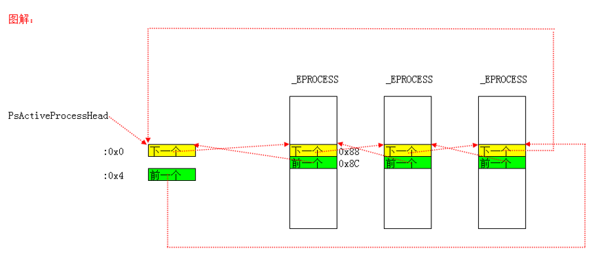
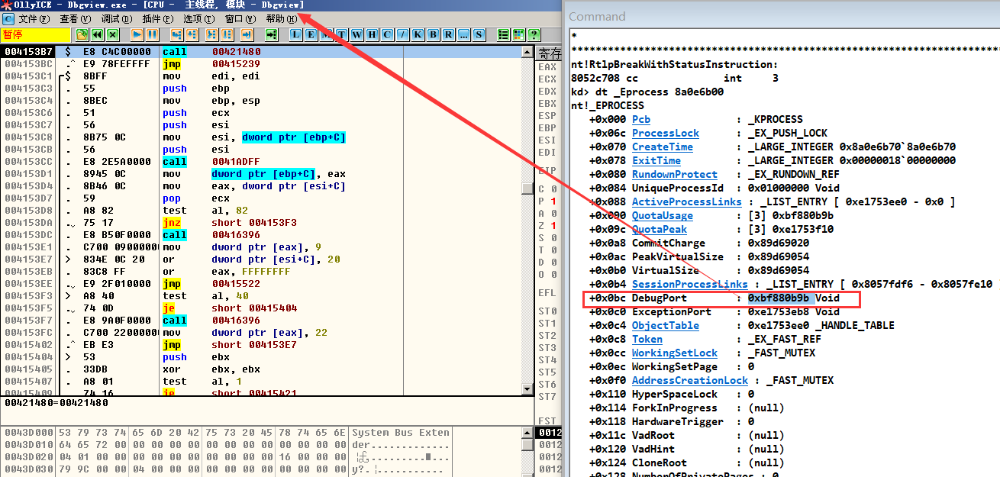
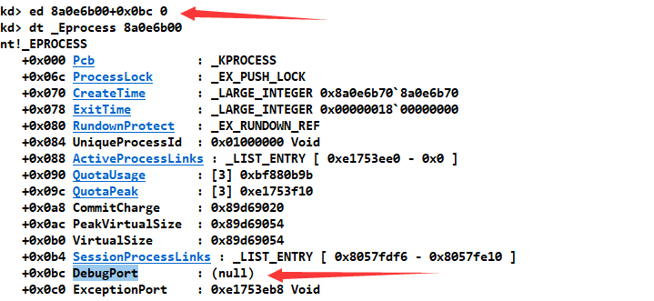
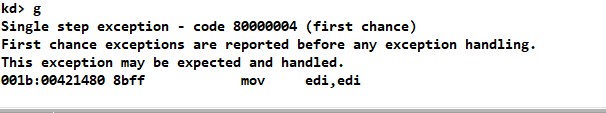

# 进程
进程最重要的作用是提供了 CR3，10-10-12 分页下 CR3 指向页目录表，2-9-9-12 分页下 CR3 指向页目录指针表。
每个进程至少有一个线程。
本质上，没有进程切换，只有线程切换。线程切换时会判断是否是同一个进程的线程，若不是同一进程则切换 CR3，这样看来进程也就切换了。
我们说进程是空间概念，进程为它的线程提供了 CR3，那么它的线程访问同一个线性地址时，就能访问到同一个物理页。
windbg 中的 attach 和 .process 本质就是切换 CR3。
# 进程结构体 EPROCCESS
kd> dt _EPROCESS | |
nt!_EPROCESS | |
+0x000 Pcb : _KPROCESS | |
+0x06c ProcessLock : _EX_PUSH_LOCK | |
+0x070 CreateTime : _LARGE_INTEGER | |
+0x078 ExitTime : _LARGE_INTEGER | |
+0x080 RundownProtect : _EX_RUNDOWN_REF | |
+0x084 UniqueProcessId : Ptr32 Void | |
+0x088 ActiveProcessLinks : _LIST_ENTRY | |
+0x090 QuotaUsage : [3] Uint4B | |
+0x09c QuotaPeak : [3] Uint4B | |
+0x0a8 CommitCharge : Uint4B | |
+0x0ac PeakVirtualSize : Uint4B | |
+0x0b0 VirtualSize : Uint4B | |
+0x0b4 SessionProcessLinks : _LIST_ENTRY | |
+0x0bc DebugPort : Ptr32 Void | |
+0x0c0 ExceptionPort : Ptr32 Void | |
+0x0c4 ObjectTable : Ptr32 _HANDLE_TABLE | |
+0x0c8 Token : _EX_FAST_REF | |
+0x0cc WorkingSetLock : _FAST_MUTEX | |
+0x0ec WorkingSetPage : Uint4B | |
+0x0f0 AddressCreationLock : _FAST_MUTEX | |
+0x110 HyperSpaceLock : Uint4B | |
+0x114 ForkInProgress : Ptr32 _ETHREAD | |
+0x118 HardwareTrigger : Uint4B | |
+0x11c VadRoot : Ptr32 Void | |
+0x120 VadHint : Ptr32 Void | |
+0x124 CloneRoot : Ptr32 Void | |
+0x128 NumberOfPrivatePages : Uint4B | |
+0x12c NumberOfLockedPages : Uint4B | |
+0x130 Win32Process : Ptr32 Void | |
+0x134 Job : Ptr32 _EJOB | |
+0x138 SectionObject : Ptr32 Void | |
+0x13c SectionBaseAddress : Ptr32 Void | |
+0x140 QuotaBlock : Ptr32 _EPROCESS_QUOTA_BLOCK | |
+0x144 WorkingSetWatch : Ptr32 _PAGEFAULT_HISTORY | |
+0x148 Win32WindowStation : Ptr32 Void | |
+0x14c InheritedFromUniqueProcessId : Ptr32 Void | |
+0x150 LdtInformation : Ptr32 Void | |
+0x154 VadFreeHint : Ptr32 Void | |
+0x158 VdmObjects : Ptr32 Void | |
+0x15c DeviceMap : Ptr32 Void | |
+0x160 PhysicalVadList : _LIST_ENTRY | |
+0x168 PageDirectoryPte : _HARDWARE_PTE | |
+0x168 Filler : Uint8B | |
+0x170 Session : Ptr32 Void | |
+0x174 ImageFileName : [16] UChar | |
+0x184 JobLinks : _LIST_ENTRY | |
+0x18c LockedPagesList : Ptr32 Void | |
+0x190 ThreadListHead : _LIST_ENTRY | |
+0x198 SecurityPort : Ptr32 Void | |
+0x19c PaeTop : Ptr32 Void | |
+0x1a0 ActiveThreads : Uint4B | |
+0x1a4 GrantedAccess : Uint4B | |
+0x1a8 DefaultHardErrorProcessing : Uint4B | |
+0x1ac LastThreadExitStatus : Int4B | |
+0x1b0 Peb : Ptr32 _PEB | |
+0x1b4 PrefetchTrace : _EX_FAST_REF | |
+0x1b8 ReadOperationCount : _LARGE_INTEGER | |
+0x1c0 WriteOperationCount : _LARGE_INTEGER | |
+0x1c8 OtherOperationCount : _LARGE_INTEGER | |
+0x1d0 ReadTransferCount : _LARGE_INTEGER | |
+0x1d8 WriteTransferCount : _LARGE_INTEGER | |
+0x1e0 OtherTransferCount : _LARGE_INTEGER | |
+0x1e8 CommitChargeLimit : Uint4B | |
+0x1ec CommitChargePeak : Uint4B | |
+0x1f0 AweInfo : Ptr32 Void | |
+0x1f4 SeAuditProcessCreationInfo : _SE_AUDIT_PROCESS_CREATION_INFO | |
+0x1f8 Vm : _MMSUPPORT | |
+0x238 LastFaultCount : Uint4B | |
+0x23c ModifiedPageCount : Uint4B | |
+0x240 NumberOfVads : Uint4B | |
+0x244 JobStatus : Uint4B | |
+0x248 Flags : Uint4B | |
+0x248 CreateReported : Pos 0, 1 Bit | |
+0x248 NoDebugInherit : Pos 1, 1 Bit | |
+0x248 ProcessExiting : Pos 2, 1 Bit | |
+0x248 ProcessDelete : Pos 3, 1 Bit | |
+0x248 Wow64SplitPages : Pos 4, 1 Bit | |
+0x248 VmDeleted : Pos 5, 1 Bit | |
+0x248 OutswapEnabled : Pos 6, 1 Bit | |
+0x248 Outswapped : Pos 7, 1 Bit | |
+0x248 ForkFailed : Pos 8, 1 Bit | |
+0x248 HasPhysicalVad : Pos 9, 1 Bit | |
+0x248 AddressSpaceInitialized : Pos 10, 2 Bits | |
+0x248 SetTimerResolution : Pos 12, 1 Bit | |
+0x248 BreakOnTermination : Pos 13, 1 Bit | |
+0x248 SessionCreationUnderway : Pos 14, 1 Bit | |
+0x248 WriteWatch : Pos 15, 1 Bit | |
+0x248 ProcessInSession : Pos 16, 1 Bit | |
+0x248 OverrideAddressSpace : Pos 17, 1 Bit | |
+0x248 HasAddressSpace : Pos 18, 1 Bit | |
+0x248 LaunchPrefetched : Pos 19, 1 Bit | |
+0x248 InjectInpageErrors : Pos 20, 1 Bit | |
+0x248 VmTopDown : Pos 21, 1 Bit | |
+0x248 Unused3 : Pos 22, 1 Bit | |
+0x248 Unused4 : Pos 23, 1 Bit | |
+0x248 VdmAllowed : Pos 24, 1 Bit | |
+0x248 Unused : Pos 25, 5 Bits | |
+0x248 Unused1 : Pos 30, 1 Bit | |
+0x248 Unused2 : Pos 31, 1 Bit | |
+0x24c ExitStatus : Int4B | |
+0x250 NextPageColor : Uint2B | |
+0x252 SubSystemMinorVersion : UChar | |
+0x253 SubSystemMajorVersion : UChar | |
+0x252 SubSystemVersion : Uint2B | |
+0x254 PriorityClass : UChar | |
+0x255 WorkingSetAcquiredUnsafe : UChar | |
+0x258 Cookie : Uint4B |
其中第一个成员也是一个结构体 _KPROCESS
kd> dt _KPROCESS | |
ntdll!_KPROCESS | |
+0x000 Header : _DISPATCHER_HEADER | |
+0x010 ProfileListHead : _LIST_ENTRY | |
+0x018 DirectoryTableBase : [2] Uint4B | |
+0x020 LdtDescriptor : _KGDTENTRY | |
+0x028 Int21Descriptor : _KIDTENTRY | |
+0x030 IopmOffset : Uint2B | |
+0x032 Iopl : UChar | |
+0x033 Unused : UChar | |
+0x034 ActiveProcessors : Uint4B | |
+0x038 KernelTime : Uint4B | |
+0x03c UserTime : Uint4B | |
+0x040 ReadyListHead : _LIST_ENTRY | |
+0x048 SwapListEntry : _SINGLE_LIST_ENTRY | |
+0x04c VdmTrapcHandler : Ptr32 Void | |
+0x050 ThreadListHead : _LIST_ENTRY | |
+0x058 ProcessLock : Uint4B | |
+0x05c Affinity : Uint4B | |
+0x060 StackCount : Uint2B | |
+0x062 BasePriority : Char | |
+0x063 ThreadQuantum : Char | |
+0x064 AutoAlignment : UChar | |
+0x065 State : UChar | |
+0x066 ThreadSeed : UChar | |
+0x067 DisableBoost : UChar | |
+0x068 PowerState : UChar | |
+0x069 DisableQuantum : UChar | |
+0x06a IdealNode : UChar | |
+0x06b Flags : _KEXECUTE_OPTIONS | |
+0x06b ExecuteOptions : UChar |
# KPROCESS 主要成员介绍
内核层的进程对象。K 开头的是内核层的。
# +0x000 Header : _DISPATCHER_HEADER
分发器对象 （dispatcher object），现在只需知道进程是可以被等待的就行。“可等待” 对象，比如 Mutex 互斥体、Event 事件等（WaitForSingleObject）
# +0x018 DirectoryTableBase : [2] Uint4B
一个只有两项的数组，其中第一项指向该进程的也目录表地址，第二项指向该进程的超空间（hyper space）的页目录表地址。
# 【+0x020 LdtDescriptor : _KGDTENTRY】、【+0x028 Int21Descriptor : _KIDTENTRY】
历史遗留，16 位 Windows 段选择子不够 每个进程都有一个 LDT 表
Int21Descriptor 是 DOS 下要用的
# +0x034 ActiveProcessors : Uint4B
ActiveProcessors 域记录了当前进程正在哪些处理器上运行。
# 【+0x038 KernelTime : Uint4B】、【+0x03c UserTime : Uint4B】
统计信息 记录了一个进程在内核模式 / 用户模式下所花的时间。进程的 KernelTime 和 UserTime 时间值等于所属线程对应的 KernelTime 和 UserTime 值的和。但是，由于仅当一个线程结束时才更新其进程的这两个时间值，所以，若一个进程中尚未有任何一个线程结束，则这两个域中的值为 0。
# +0x040 ReadyListHead : _LIST_ENTRY
ReadyListHead 是一个双向链表的表头，该链表记录了这个进程中处于就绪状态但尚未被加入全局就绪链表的线程，这个域的意义在于，当一个进程被换出内存以后，它所属的线程一旦就绪，则被挂到此链表中，并要求换入该进程；以后，当该进程被换入内存时， ReadyListHead 中的所有线程被加入到系统全局的就绪线程链表中。注意， ReadyListHead 链表中的每一项都是一个指向 KTHREAD 对象的 WaitlistEntry 域的地址，所以，从链表中的每一项都可以定位到对应的线程对象。例如，下面的代码片段是从 KilnSwapProcesses 函数中摘录的，从代码中可以看到 ReadyListHead 链表的用法。这段代码的意图是，将链表中的每个线程加入到全局就绪线程链表中（通过调用 KiReadyThread 来完成）。
Process->State=ProcessInMemory； | |
NextEntry=Process->ReadyListHead.Flink; | |
while(NextEntry l=&Process->ReadyListHead){ | |
Thread=CONTAINING_RECORD(NextEntry,KTHREAD,WaitListEntry); | |
RemoveEntryList(NextEntry); | |
Thread->ProcessReadyQueue =FALSE； | |
KiReadyThread(Thread); | |
NextEntry=Process->ReadyListHead.Flink; | |
} |
# +0x048 SwapListEntry : _SINGLE_LIST_ENTRY
SwapListEntry 域是一个单链表项，当一个进程要被换出内存时，它通过此域加入到以 KiProcessOurSwapListHead 为链头的单链表中；当一个进程要被换入内存时，它通过此域加入到以 KiProcessInSwapListHead 为链头的单链表中。这里，KiProcessOurSwapListHead 和 KiProcessInSwapListHead 是全局变量。
# +0x05c Affinity : Uint4B
Affinity 域指定了该进程的线程可以在哪些处理器上运行，其类型是 KAFFINITY, 这是一个 32 位或 64 位整数，其二进制表示的每位分别对应于当前机器上的一个处理器 (或核)。
规定进程里面的所有线程能在哪个 CPU 上跑，如果值为 1，那这个进程的所以线程只能在 0 号 CPU 上跑 (00000001)
如果值为 3，那这个进程的所以线程能在 0、1 号 CPU 上跑 (000000011)
如果值为 4，那这个进程的所以线程能在 2 号 CPU 上跑 (000000100)
如果值为 5，那这个进程的所以线程能在 0，2 号 CPU 上跑 (000000101)
4 个字节共 32 位 所以最多 32 核 Windows64 位 就 64 核
如果只有一个 CPU 把这个设置为 4 那么这个进程就死了
# +0x062 BasePriority : Char
基础优先级或最低优先级 该进程中的所有线程最起码的优先级.
# +0x065 State : UChar
State 域说明了一个进程是否在内存中，共有六种可能的状态： ProcessInMemory 、 ProcessOutOfMemory 、 ProcessInTransition 、 ProcessOutTransition 、 ProcessInSwap 和 ProcessOutSwap 。所谓一个进程在内存中，或者已被换出，或者正在转移过程中，是指该进程的虚拟地址空间需要占据足够的物理内存，或者虚拟空间中的内容已被换出物理内存，或者正在换入或换出过程之中。
# EPROCESS 其他成员
执行体层的进程和线程对象。E 开头的。
# 【+0x070 CreateTime : _LARGE_INTEGER】、【+0x078 ExitTime : _LARGE_INTEGER】
进程的创建 / 退出时间。 没什么用，不准确。
# +0x084 UniqueProcessId : Ptr32 Void
进程的编号 任务管理器中的 PID
# +0x088 ActiveProcessLinks : _LIST_ENTRY
双向链表 所有的活动进程都连接在一起，构成了一个链表
PsActiveProcessHead 指向全局链表头

# 【+0x090 QuotaUsage : [3] Uint4B】、【+0x09c QuotaPeak : [3] Uint4B】
物理页相关的统计信息
# 【+0x0a8 CommitCharge : Uint4B】、【+0x0ac PeakVirtualSize : Uint4B】、【+0x0b0 VirtualSize : Uint4B】
虚拟内存相关的统计信息
# +0x11c VadRoot : Ptr32 Void
标识 0-2G 哪些地址被占用了
# 【+0x0bc DebugPort : Ptr32 Void】、【+0x0c0 ExceptionPort : Ptr32 Void】
调试相关
# +0x0c4 ObjectTable : Ptr32 _HANDLE_TABLE
句柄表
# +0x174 ImageFileName : [16] UChar
进程镜像文件名 最多 16 个字节
# +0x1a0 ActiveThreads : Uint4B
活动线程的数量
# +0x1b0 Peb : Ptr32 _PEB
PEB ((Process Environment Block 进程环境块)：进程在 3 环的一个结构体，里面包含了进程的模块列表、是否处于调试状态等信息。
关于 PEB 或者其他成员更加详细的说明：参考 潘爱民老师《Windows 内核原理与实现》 中的第 3 章
# 本章总结
0 环查看当前进程
通过 KPCR 找当前线程，然后找其 + 0x220 找当前进程。
后面通过学习进程的创建，来观察进程结构体是如何填充的。
# 实验练习
- 体会 DebugPort 的作用：用调试器（调试器最好没有插件）调试程序，然后把 进程结构体的 DebugPort 清零，在调试器里接着调试，观察会发生什么。
就不写代码更改了，直接用 windbg 修改了。
调试时 DebugPort 的值：


清空这个值后，在调试器里执行单步：

直接报异常了。
- 0 环进程断链
代码如下：
没有写恢复的。
#include<ntddk.h> | |
VOID DriverUnload(PDRIVER_OBJECT pDriver) { | |
DbgPrint("我是驱动，我卸载了\t\n"); | |
} | |
NTSTATUS EProcessBreakChain(PUCHAR ProcessName) { | |
ULONG Pro; | |
// 由 KPCR+0x124 的位置得到当前 CPU 正在处理的线程的结构体的指针，_KTHREAD + 0x44 的位置能够得到此线程的进程结构体的地址 | |
__asm { | |
mov eax, fs: [0x124] ; | |
mov ecx, [eax + 0x44]; | |
mov Pro, ecx; | |
} | |
// 进程结构体 EPROCESS +0x88 的位置是一个链接所有进程的双向链表 | |
PLIST_ENTRY pListProcess = (PLIST_ENTRY)(Pro + 0x88); | |
// 遍历进程 | |
while (pListProcess->Flink != (PLIST_ENTRY)(Pro + 0x88)) | |
{ | |
//EPROCESS 结构体 | |
ULONG NextProcess = ((ULONG)(pListProcess)) - 0x88; | |
if (strcmp(ProcessName, (PCHAR)(NextProcess + 0x174)) == 0) | |
{ | |
DbgPrint("FindProcess:%s PEPROCESS:%X\t\n", ((PCHAR)NextProcess + 0x174), NextProcess); | |
// 断链 | |
PLIST_ENTRY CurPro = (PLIST_ENTRY)(NextProcess+ 0x88); | |
PLIST_ENTRY BlinkPro = CurPro->Blink; | |
PLIST_ENTRY FlinkPro = CurPro->Flink; | |
BlinkPro->Flink = FlinkPro->Flink; | |
FlinkPro->Blink = BlinkPro->Flink; | |
return STATUS_SUCCESS; | |
} | |
pListProcess = pListProcess->Flink; | |
} | |
return STATUS_UNSUCCESSFUL; | |
} | |
NTSTATUS DriverEntry(PDRIVER_OBJECT pDriver, PUNICODE_STRING pRegPath) { | |
NTSTATUS ntStatus = NULL; | |
pDriver->DriverUnload = DriverUnload; | |
DbgPrint("我是驱动,我运行了\t\n"); | |
//r0 进程断链 | |
// 遍历进程 断链 | |
ntStatus = EProcessBreakChain("Dbgview.exe"); | |
if (!NT_SUCCESS(ntStatus)) | |
{ | |
DbgPrint("断链失败！！\t\n"); | |
return ntStatus; | |
} | |
DbgPrint("断链成功！！\t\n"); | |
return STATUS_SUCCESS; | |
} |
# Reference
潘爱民前辈的《Windows 内核原理与实现》一书。